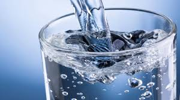

Información sobre el agua:
Nuestra web cuenta también con un apartado específico sobre el Agua. Con toda la información y recomendaciones sobre un uso mas responsable del agua para todos.Consejos sobre el filtrado y purificación de agua en el Hogar en España y Latam.
Que productos pueden funcionarte mejor a la hora de obtener un agua de mejor calidad para los tuyos.
La calidad del agua en España, agrupada por comunidades autónomas, así como todas las provincias de España.
Ahora también en Latinoamérica:
CALIDAD DEL AGUA EN MÉXICO

Mejora la calidad del agua Fácilmente en tu Hogar!
Los equipos mas vendidos en España y Latam, y que encontrarás en nuestra tienda online son: